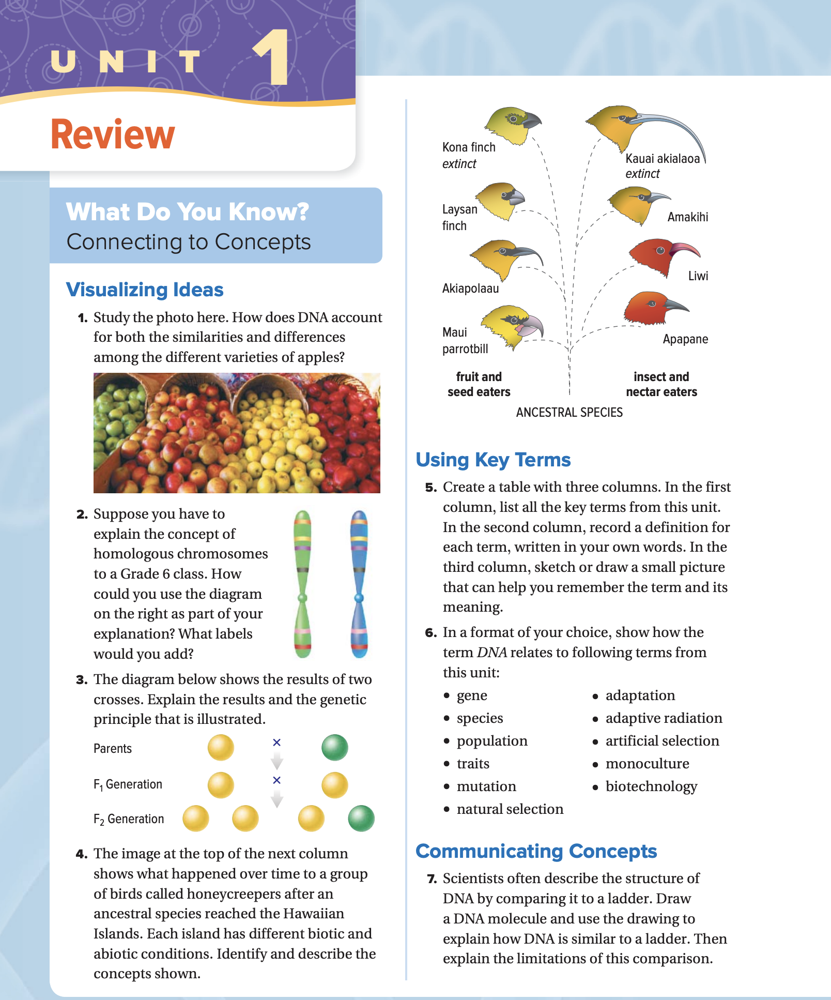
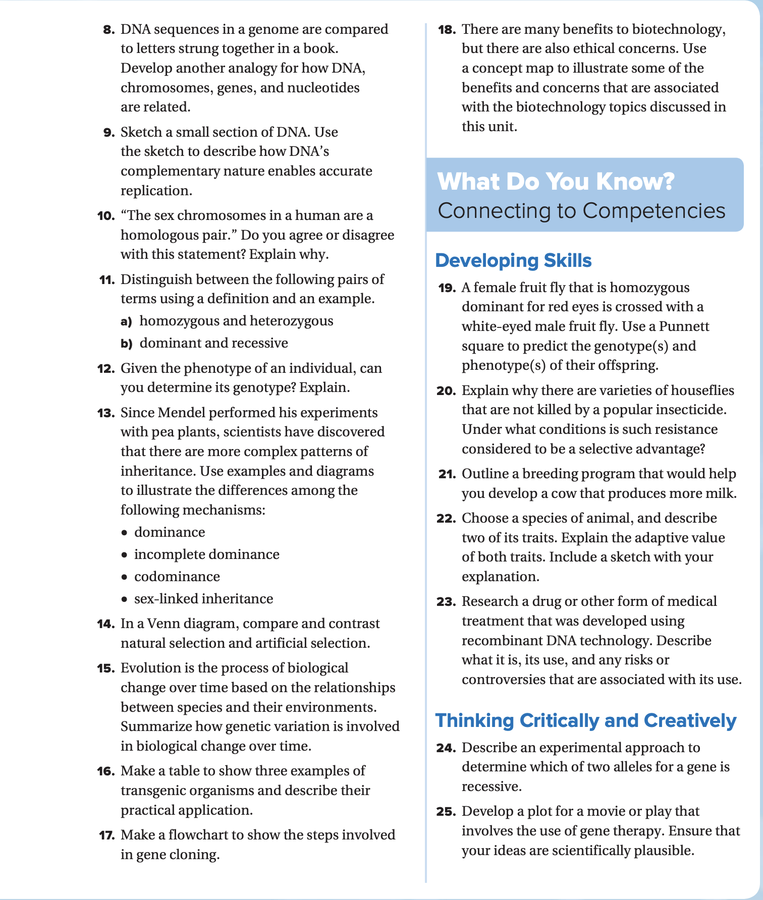
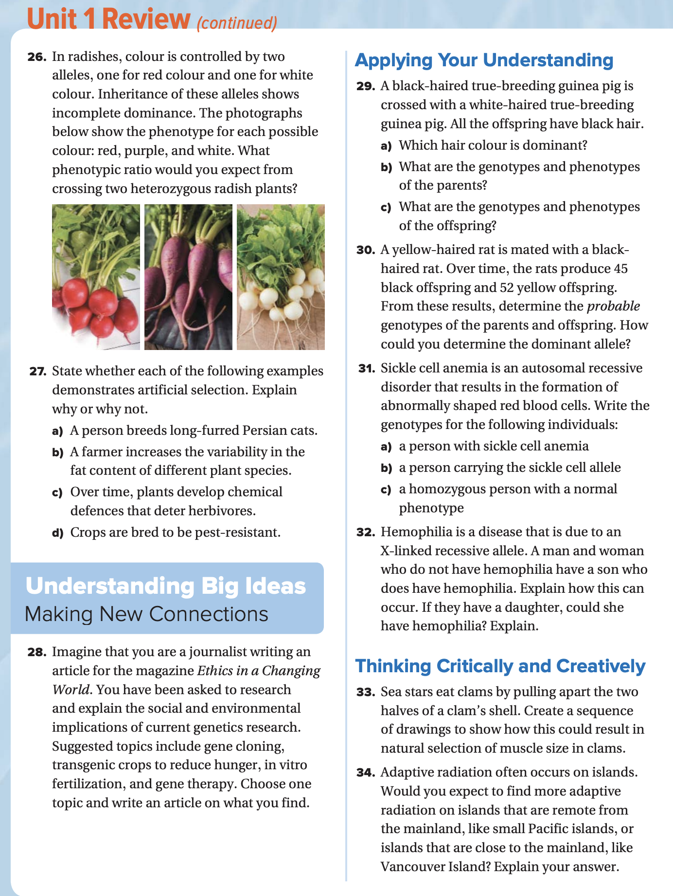
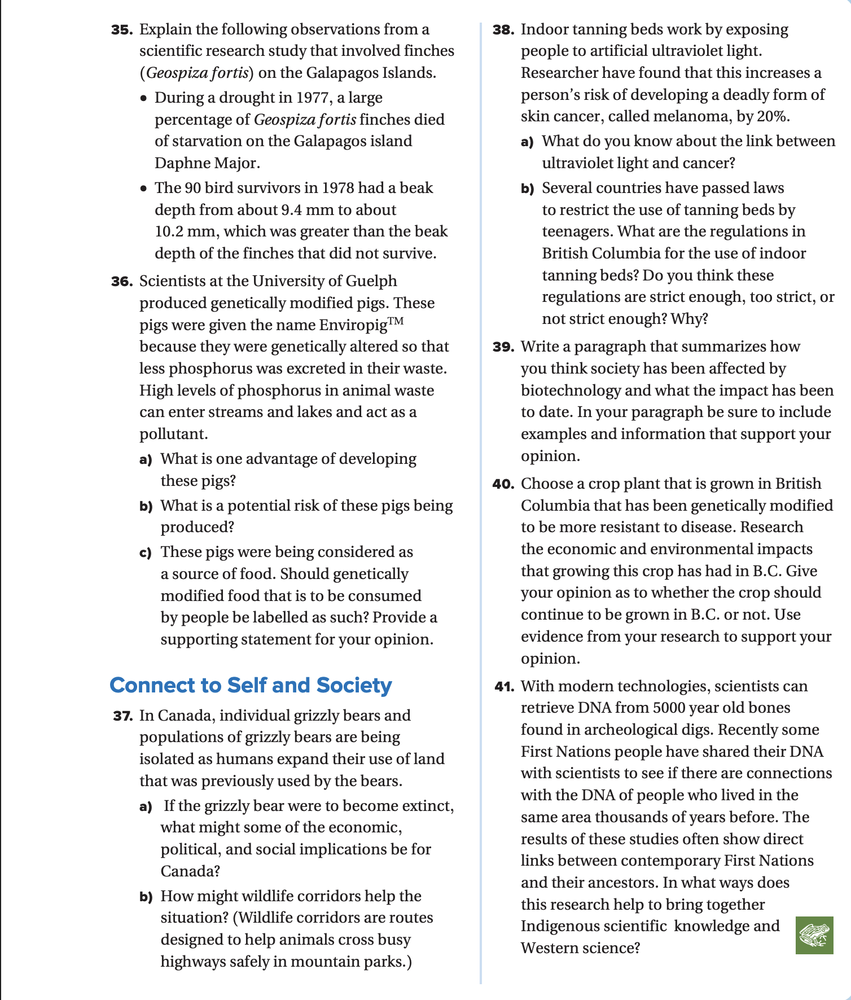

AI grading (optional)
Textbook Page 1

Answers 1–7
1. DNA and different varieties of apples
DNA 与不同品种的苹果
Answer: All apples share much of the same DNA, which gives them similar basic characteristics (being fruit, having seeds, similar structure). Small differences in DNA – mutations and different versions of genes (alleles), often produced and chosen by selective breeding – cause differences in colour, taste, size, and texture among varieties.
答案：所有苹果都共享大量相同的 DNA，因此它们有相似的基本特征（都是果实、有种子、结构相近）。DNA 的细微差异——突变和不同的基因版本（等位基因），常常通过选择育种产生并被保留下来——会导致不同品种在颜色、味道、大小和口感/质地上的差别。
2. Homologous chromosomes
同源染色体
Answer: Homologous chromosomes are pairs of chromosomes (one from each parent) that have the same size, shape, and matching gene locations, but can carry different versions of those genes.
答案：同源染色体是一对染色体（分别来自父母各一条），它们大小和形状相似、基因位置对应相同，但这些基因可以携带不同版本（等位基因）。
Labels you could add:
可添加的标注：
- “Homologous pair”
“同源染色体对” - “Chromosome from mother” and “Chromosome from father”
“来自母亲的染色体”和“来自父亲的染色体” - “Same genes / different alleles”
“基因相同 / 等位基因不同” - Centromere
着丝粒 - Gene locations (e.g., A/a, B/b)
基因位置（例如 A/a、B/b）
3. Cross results and genetic principle
杂交结果与遗传原理
Answer: The diagram shows a cross where two pure-breeding parents with different traits produce F₁ offspring that all show the dominant trait. When the F₁ generation is crossed, the F₂ shows a 3:1 ratio (three dominant: one recessive).
This illustrates dominant and recessive alleles and Mendel’s Law of Segregation: alleles separate during gamete formation, then recombine at fertilization to give the observed 3:1 ratio.
答案：图示说明：两个具有不同性状、且为纯合（纯系）的亲本杂交后，F₁ 代全部表现为显性性状；当 F₁ 再互交时，F₂ 代出现 3:1 的比例（三个显性：一个隐性）。
这体现了显性与隐性等位基因以及孟德尔分离定律：等位基因在形成配子时分离，在受精时重新组合，从而产生观察到的 3:1 表型比例。
4. Hawaiian honeycreepers & adaptive radiation
夏威夷蜜旋木雀与适应辐射
Answer: An ancestral honeycreeper species arrived on the Hawaiian Islands. Different islands had different biotic factors (plants, insects, predators) and abiotic factors (rainfall, elevation, climate). Over time, natural selection favoured birds with beaks and behaviours suited to each environment. This produced many new species with specialized beaks for fruit, seeds, insects, or nectar.
Concepts shown: adaptive radiation, natural selection, speciation, evolution from a common ancestor, environmental pressures shaping traits.
答案：一种祖先蜜旋木雀来到夏威夷群岛。不同岛屿的生物因素（植物、昆虫、捕食者）和非生物因素（降雨量、海拔、气候）不同。随着时间推移，自然选择更有利于那些喙形和行为更适合各自环境的个体，结果形成了许多新物种，它们的喙专门适应取食果实、种子、昆虫或花蜜。
体现的概念：适应辐射、自然选择、物种形成、共同祖先进化、环境压力塑造性状。
5. Three-column key-term table
三列表：关键词表
Answer (example structure):
Column 1 – key term; Column 2 – your own definition; Column 3 – a small sketch to help remember it.
Example rows:
答案（示例结构）：
第 1 列——关键词；第 2 列——用自己的话写定义；第 3 列——画一个小草图帮助记忆。
示例行：
- Gene: a segment of DNA that codes for a trait – sketch: DNA ladder with a highlighted part.
基因：DNA 的一个片段，编码某种性状——草图：把 DNA 梯子的一段高亮出来。 - Mutation: a change in the DNA sequence – sketch: lightning bolt on DNA.
突变：DNA 序列发生改变——草图：在 DNA 上画一道闪电。 - Natural selection: individuals with helpful traits survive and reproduce more – sketch: a bird with a long beak surviving.
自然选择：具有有利性状的个体更容易存活并繁殖更多——草图：长喙的鸟更容易生存。
6. How DNA relates to key terms
DNA 与关键词的关系
- Gene: genes are made of DNA.
基因：基因由 DNA 构成。 - Species: differences in DNA help distinguish species.
物种：DNA 的差异有助于区分不同物种。 - Population: a population shares a pool of DNA/alleles.
种群：一个种群共享某个 DNA/等位基因库（基因库）。 - Traits: traits result from DNA instructions.
性状：性状源自 DNA 的遗传指令。 - Mutation: a change in DNA.
突变：DNA 的改变。 - Natural selection: selects helpful DNA variations.
自然选择：筛选并保留有利的 DNA 变异。 - Adaptation: a trait shaped by natural selection based on underlying DNA.
适应（适应性特征）：基于底层 DNA，由自然选择塑造出来的性状。 - Adaptive radiation: many new species arise from DNA changes in different environments.
适应辐射：在不同环境中，DNA 变化累积导致从一个祖先分化出多个新物种。 - Artificial selection: humans choose which DNA traits to breed.
人工选择：人类选择哪些 DNA 性状被繁殖保留。 - Monoculture: crop plants with very similar/identical DNA.
单一种植（单一栽培）：种植 DNA 非常相似/几乎相同的作物。 - Biotechnology: direct use and manipulation of DNA (e.g., cloning, gene editing).
生物技术：直接利用并操控 DNA（如克隆、基因编辑）。
7. DNA as a ladder – usefulness & limits
把 DNA 比作梯子——优点与局限
Similarities:
- DNA has two sides like a ladder.
DNA 有两条“边”，像梯子的两侧。 - The “rungs” are base pairs (A–T, C–G).
“横档”对应碱基对（A–T、C–G）。 - The sides are the sugar–phosphate backbones.
两侧对应糖-磷酸骨架。
Limitations:
- Real DNA is a twisted double helix, not a straight ladder.
真实的 DNA 是扭转的双螺旋，不是直的梯子。 - DNA can unzip, copy itself, and carry coded information; a ladder cannot.
DNA 能解旋、复制并携带编码信息；梯子做不到这些。 - Rungs are chemical base pairs, not solid bars.
“横档”是化学碱基对，不是实心横杆。
So the ladder comparison is good for basic structure but does not show twisting, function, or dynamics.
因此，“梯子”类比适合用来理解基本结构，但无法体现 DNA 的扭转形态、功能与动态变化。
Textbook Page 2

Answers 8–25
8. Analogy for DNA, chromosomes, genes, and nucleotides
DNA、染色体、基因与核苷酸的类比
Answer: Think of a recipe book:
答案：可以把它们类比成一本食谱书：
- Nucleotides = letters
核苷酸＝字母 - Genes = individual recipes
基因＝一条条具体的食谱 - Chromosomes = chapters in the book
染色体＝书里的章节 - Genome = entire cookbook
基因组＝整本食谱书
9. Complementary base pairing and replication
互补碱基配对与复制
Answer: DNA has complementary base pairs: A pairs with T, C pairs with G. During replication, the two strands separate. Each old strand is used as a template to build a new strand because only the correct complementary base can pair. This built-in matching system makes copying accurate.
答案：DNA 具有互补碱基配对：A 与 T 配对，C 与 G 配对。复制时，两条链分开；每一条旧链作为模板，因为只有正确的互补碱基才能配对，从而合成新链。这种“自带校对”的匹配规则使复制更准确。
10. Are human sex chromosomes a homologous pair?
人类性染色体是否是同源一对？
Answer: Not always. In females (XX), the X chromosomes form a homologous pair. In males (XY), X and Y differ in size, shape, and genes, so they are not homologous. So the statement is only true for females, not for all humans.
答案：不一定。女性（XX）两条 X 染色体是同源一对；男性（XY）X 与 Y 在大小、形状和所含基因上差异很大，因此不算同源染色体。所以“性染色体是同源一对”只对女性成立，并非对所有人都成立。
11a. Homozygous vs heterozygous
纯合 vs 杂合
Homozygous: two identical alleles (RR or rr). Example: RR = homozygous dominant round peas.
Heterozygous: two different alleles (Rr). Example: Rr = round peas that carry the wrinkled allele.
纯合（homozygous）：两个等位基因相同（RR 或 rr）。例如：RR＝显性纯合，豌豆为圆粒。
杂合（heterozygous）：两个等位基因不同（Rr）。例如：Rr＝表现为圆粒，但携带皱粒等位基因。
11b. Dominant vs recessive
显性 vs 隐性
Dominant: expressed when at least one copy is present (e.g., brown eyes B).
Recessive: expressed only if both alleles are recessive (e.g., blue eyes bb).
显性（dominant）：只要至少有一份该等位基因就能表现（例如 B 表示棕色眼睛）。
隐性（recessive）：只有两份都是隐性等位基因时才表现（例如 bb 表示蓝色眼睛）。
12. Can you get genotype from phenotype?
能否从表型推断基因型？
Answer: Sometimes. If the trait is recessive, the genotype must be homozygous recessive (bb). If the trait is dominant, the genotype could be BB or Bb, so you usually cannot tell without a test cross, family information, or genetic testing.
答案：有时可以。若表型为隐性性状，则基因型一定是隐性纯合（bb）。若表型为显性性状，基因型可能是 BB 或 Bb，通常无法仅凭表型确定，需要测交、家系信息或基因检测。
13. Dominance, incomplete dominance, codominance, sex-linked
显性、不完全显性、共显性与性连遗传
Dominance: One allele masks another (Rr → round peas).
Incomplete dominance: Heterozygous phenotype is a blend (RR red × WW white → RW pink flowers).
Codominance: Both alleles are fully expressed (AB blood type).
Sex-linked inheritance: Gene on a sex chromosome (e.g., X-linked red-green colour blindness).
显性：一个等位基因掩盖另一个（Rr → 圆粒豌豆）。
不完全显性：杂合体表型呈“中间型/混合型”（RR 红 × WW 白 → RW 粉红花）。
共显性：两个等位基因都完全表达（AB 血型）。
性连遗传：基因位于性染色体上（如 X 连锁红绿色盲）。
14. Natural selection vs artificial selection
自然选择 vs 人工选择
Natural selection: Environment (predators, climate, food) selects traits; occurs without human control; leads to adaptations and new species.
Artificial selection: Humans choose parents with desired traits (e.g., bigger fruit, certain dog breeds); changes happen faster but can reduce genetic diversity.
Both change allele frequencies and can produce new varieties.
自然选择：环境（捕食者、气候、食物等）筛选性状；不由人类控制；可导致适应性特征和新物种出现。
人工选择：人类挑选具有期望性状的亲本（如更大的果实、特定犬种）；变化更快，但可能降低遗传多样性。
二者共同点：都会改变等位基因频率，并能产生新的品系/品种。
15. Genetic variation and evolution
遗传变异与进化
Answer: Genetic variation provides differences among individuals. Some variations make individuals better suited to their environment. Natural selection favours those individuals, so their alleles become more common in the population over generations. This gradual change in allele frequencies is evolution.
答案：遗传变异使个体之间产生差异。有些变异让个体更适合环境，从而在自然选择下更容易存活并繁殖，使这些等位基因在种群中代代变得更常见。等位基因频率随世代逐渐改变的过程就是进化。
16. Three transgenic organisms
三种转基因生物
- Bacillus-toxin (Bt) corn: has a bacterial gene for insect resistance; reduces pesticide use.
Bt 玉米：导入细菌的 Bt 毒素基因以抗虫；可减少农药使用。 - Glow fish: fish with a jellyfish fluorescence gene; used in research and as aquarium pets.
荧光鱼：带有水母荧光基因；用于研究或观赏。 - Insulin-producing bacteria: have human insulin gene; produce insulin for diabetes treatment.
产胰岛素细菌：携带人类胰岛素基因；生产胰岛素用于糖尿病治疗。
17. Flowchart – gene cloning
流程图——基因克隆
- Isolate DNA containing the target gene.
分离出含目标基因的 DNA。 - Cut the gene with restriction enzymes.
用限制性内切酶切割出目标基因片段。 - Cut a plasmid with the same enzymes.
用相同的酶切割质粒。 - Insert the gene into the plasmid (recombinant DNA).
把基因片段连接进质粒（形成重组 DNA）。 - Insert plasmid into bacteria.
把质粒导入细菌。 - Bacteria reproduce, cloning the gene.
细菌繁殖，从而复制该基因。 - Collect the gene or protein product.
收集基因本身或其蛋白产物。
18. Biotechnology benefits & concerns
生物技术的益处与担忧
Benefits:
益处：
- Higher crop yields and survival.
提高作物产量与存活率。 - Disease-resistant plants and animals.
培育抗病的植物和动物。 - Production of medicines (insulin, vaccines).
生产药物（胰岛素、疫苗等）。 - Gene therapy possibilities.
基因治疗的可能性。
Concerns:
担忧：
- Ethical issues (who controls genes? designer babies?).
伦理问题（谁掌控基因？“设计婴儿”？）。 - Environmental impacts (cross-breeding with wild species, loss of biodiversity).
环境影响（与野生种杂交、降低生物多样性等）。 - Food-safety and health questions.
食品安全与健康风险的疑问。 - Economic and social fairness (access, patents).
经济与社会公平（获取门槛、专利等）。
19. Black × white true-breeding guinea pigs
黑色 × 白色 纯合豚鼠
Let B = black (dominant), b = white (recessive).
a) Black is dominant (all offspring are black).
b) Parents: BB (black) × bb (white).
c) Offspring genotypes: 100% Bb; phenotypes: 100% black.
设 B＝黑色（显性），b＝白色（隐性）。
a) 黑色为显性（后代全部为黑色）。
b) 亲本：BB（黑）× bb（白）。
c) 子代基因型：100% Bb；表型：100% 黑色。
20. Houseflies resistant to insecticide
对杀虫剂有抗性的家蝇
Answer: Some flies have mutations that make them resistant to a particular insecticide. When the insecticide is used, most flies die but resistant ones survive and reproduce. Over time, more of the population carries the resistance. This resistance is a selective advantage when the insecticide is used regularly in the environment.
答案：有些家蝇因突变而对某种杀虫剂具有抗性。使用杀虫剂后，大多数家蝇死亡，但抗性个体存活并繁殖。久而久之，种群中携带抗性等位基因的比例上升。在经常使用杀虫剂的环境中，这种抗性就是一种选择优势。
21. Breeding program for cows that produce more milk
提高奶牛产奶量的育种计划
- Measure milk production in many cows and identify those with highest yield.
测量大量奶牛的产奶量，找出产量最高的个体。 - Breed high-producing cows with bulls from high-producing families (artificial insemination if available).
让高产母牛与高产家系的公牛繁殖（有条件可用人工授精）。 - Record milk yield of their daughters.
记录其女儿（后代母牛）的产奶量。 - Select the highest-producing daughters as the next generation of mothers.
选出产量最高的女儿作为下一代母本。 - Repeat over many generations, choosing only the best animals each time.
重复多代，每一代都只保留最优个体参与繁殖。
22. Animal traits & adaptive value (example: Arctic fox)
动物性状与适应价值（例：北极狐）
- White winter fur: camouflages the fox in snow, helping it avoid predators and sneak up on prey.
冬季白色皮毛：在雪地中伪装，帮助躲避天敌并更接近猎物。 - Short ears and compact body: reduce surface area and heat loss, helping it stay warm in cold climates.
短耳与紧凑体型：减少表面积与散热，帮助在寒冷气候中保温。
23. Example recombinant-DNA medical treatment
重组 DNA 的医疗应用例子
Example: Human insulin from GM bacteria
例子：用转基因细菌生产人胰岛素
- What it is: Bacteria engineered with the human insulin gene.
是什么：将人胰岛素基因导入细菌，使其能表达胰岛素。 - Use: Produce insulin to treat diabetes.
用途：生产胰岛素，用于治疗糖尿病。 - Benefits: Consistent, pure insulin; avoids animal-allergy issues.
优点：胰岛素纯度高、质量稳定；避免动物来源可能引发的过敏等问题。 - Risks/controversies: Cost, control by large companies, ethical questions about GM organisms and patents.
风险/争议：成本、被大公司控制的担忧，以及转基因生物与专利相关的伦理问题。
24. Experiment to find which allele is recessive
确定哪个等位基因是隐性的实验
- Cross two individuals with different phenotypes.
让两个表型不同的个体杂交。 - If all F₁ offspring show only one phenotype, that phenotype is likely dominant.
若 F₁ 代全部呈现同一种表型，该表型很可能是显性。 - Cross two F₁ individuals.
再让两只 F₁ 个体互交。 - If the “hidden” phenotype reappears in about a 3:1 ratio in F₂, the reappearing trait is recessive (it only shows when alleles are homozygous).
若“消失”的表型在 F₂ 代按约 3:1 再次出现，则重新出现的性状为隐性（只有隐性纯合时才表现）。
25. Movie/play plot with gene therapy (example)
带有基因治疗的电影/戏剧剧情（示例）
Answer (sample idea): A child is born with a rare immune disorder that leaves them vulnerable to infections. Scientists use CRISPR-based gene therapy to fix the faulty gene in stem cells taken from the child. The corrected cells are returned, and the immune system gradually recovers. The story follows the science, the clinical trials, and the family’s ethical worries about side-effects and long-term risks, showing real possibilities and limits of modern gene therapy.
答案（示例想法）：一个孩子出生时患有罕见的免疫缺陷，极易感染。科学家用基于 CRISPR 的基因治疗，在从孩子体内取出的干细胞中修复缺陷基因，再把修复后的细胞回输，免疫系统逐步恢复。故事可以跟随科学原理、临床试验过程，以及家庭对副作用与长期风险的伦理担忧，展现现代基因治疗真实的可能性与局限。
Textbook Page 3

Answers 26–34
26. Incomplete dominance in radishes
萝卜中的不完全显性
Let R = red allele, W = white allele. In incomplete dominance:
- RR = red
RR＝红色 - WW = white
WW＝白色 - RW = purple
RW＝紫色（中间型）
Cross two heterozygous plants: RW × RW.
Genotypes: 1 RR : 2 RW : 1 WW → Phenotypes: 1 red : 2 purple : 1 white.
设 R＝红色等位基因，W＝白色等位基因。在不完全显性中：
杂交两株杂合体：RW × RW。
基因型：1 RR : 2 RW : 1 WW → 表型：1 红 : 2 紫 : 1 白。
27. Artificial selection examples
人工选择的例子
a) Breeding long-fur Persian cats – Yes, artificial selection (humans choose traits).
b) Farmer increases variability of fat content in plants – Yes, artificial selection (intentional breeding for traits).
c) Plants develop chemical defences over time – No, natural selection (environment selects, not people).
d) Crops bred to be pest-resistant – Yes, artificial selection (humans choose and/or modify plants).
a) 培育长毛波斯猫——是，人工选择（人类选择性状）。
b) 农民通过育种增加植物脂肪含量的变异——是，人工选择（有目的地选择性繁殖）。
c) 植物随时间形成化学防御——否，这是自然选择（环境在筛选，而不是人）。
d) 培育抗虫作物——是，人工选择（人类选择并/或改造植物）。
28. Ethics article on genetics (outline)
遗传学伦理文章（提纲）
Answer (outline for any topic such as gene therapy or transgenic crops):
答案（适用于基因治疗、转基因作物等任何主题的提纲）：
- Explain how the technology works in simple language.
用通俗语言解释技术原理。 - Describe social benefits (e.g., curing disease, reducing hunger).
说明社会益处（如治病、减轻饥饿）。 - Describe environmental impacts and ethical concerns.
说明环境影响与伦理担忧。 - Include views from different groups (scientists, farmers, patients, activists).
纳入不同群体观点（科学家、农民、患者、环保/社会组织等）。 - Conclude with a balanced opinion based on your research.
基于调研给出相对平衡的结论与观点。
29. Guinea pigs – already answered above
豚鼠——上面已回答
See Question 19 for full Punnett-square explanation (same pattern: BB × bb → 100% Bb, black offspring).
见第 19 题的完整潘尼特方格解释（同样模式：BB × bb → 100% Bb，后代为黑色）。
30. Yellow × black rats – 45 black, 52 yellow
黄色 × 黑色 大鼠——45 黑、52 黄
The ratio (~1:1) suggests a cross between a heterozygous parent and a homozygous recessive parent.
- Genotypes likely: Bb × bb.
- Offspring: ½ Bb and ½ bb.
Which allele is dominant depends on which colour the Bb rats show. To determine dominance, you would match genotype to phenotype by doing further crosses (e.g., cross two same-colour offspring and see which trait disappears/reappears in a 3:1 ratio).
比例（约 1:1）提示：杂交可能发生在一个杂合体亲本与一个隐性纯合亲本之间。
- 可能的基因型：Bb × bb。
- 子代：½ Bb 与 ½ bb。
哪一个等位基因为显性，取决于 Bb 个体表现出的毛色。要判断显隐性，可通过进一步杂交把基因型与表型对应起来（例如让两只同色子代互交，观察某性状是否以 3:1 的方式消失/再出现）。
31. Sickle cell anemia genotypes
镰刀型贫血的基因型
Let S = normal allele, s = sickle-cell allele (recessive).
- a) Person with sickle-cell anemia: ss.
- b) Carrier: Ss.
- c) Homozygous with normal phenotype: SS.
设 S＝正常等位基因，s＝镰刀型等位基因（隐性）。
- a) 镰刀型贫血患者：ss。
- b) 携带者：Ss。
- c) 表型正常的纯合体：SS。
32. Hemophilia – X-linked recessive
血友病——X 连锁隐性
Let Xᴴ = normal allele, Xʰ = hemophilia allele.
- Father without hemophilia: XᴴY.
- Mother without hemophilia but with affected son: must be carrier XᴴXʰ.
- Affected son: XʰY (Xʰ from mother, Y from father).
Could a daughter have hemophilia? No, because she would need Xʰ from both parents (XʰXʰ). The father does not carry Xʰ, so daughters could be normal (XᴴXᴴ) or carriers (XᴴXʰ), but not affected.
设 Xᴴ＝正常等位基因，Xʰ＝血友病等位基因。
- 无血友病的父亲：XᴴY。
- 无血友病但有患病儿子的母亲：必为携带者 XᴴXʰ。
- 患病儿子：XʰY（Xʰ 来自母亲，Y 来自父亲）。
女儿可能患血友病吗？不可能，因为女儿需要从父母双方都得到 Xʰ（XʰXʰ）才会患病。父亲不携带 Xʰ，因此女儿只能是正常（XᴴXᴴ）或携带者（XᴴXʰ），不会患病。
33. Sea stars, clams, and muscle size
海星、蛤蜊与闭壳肌肉大小
Answer: Sea stars pry open clams and more easily eat clams with weaker muscles. Those clams die more often and leave fewer offspring. Clams with stronger muscles survive and reproduce. Over many generations, strong-muscle genes become more common and the average muscle size in the clam population increases. This is natural selection.
答案：海星会撬开蛤蜊，更容易吃到闭壳肌肉较弱的蛤蜊。肌肉弱的蛤蜊更常被捕食，留下的后代更少；肌肉强的蛤蜊更能存活并繁殖。经过很多代，强肌肉相关基因在种群中变得更常见，蛤蜊种群的平均肌肉大小增大。这就是自然选择。
34. Adaptive radiation on islands
岛屿上的适应辐射
Answer: You would expect more adaptive radiation on small, remote islands (like tiny Pacific islands) than on islands close to the mainland (like Vancouver Island). Remote islands are more isolated, have less gene flow, and many empty ecological niches. A colonizing species can evolve into many different species. Islands near the mainland receive more immigrants, so gene flow tends to slow or prevent speciation.
答案：相比靠近大陆的岛屿（如温哥华岛），小而偏远的岛屿（如太平洋上的小岛）更可能发生显著的适应辐射。偏远岛屿更隔离、基因流动少，而且存在许多空缺生态位，入侵/定居的物种更容易分化成多个新物种。靠近大陆的岛屿会不断有移入个体，基因流动往往会减缓或阻止物种形成。
Textbook Page 4

Answers 35–41
35. Finch study on Daphne Major (Geospiza fortis)
达芙妮岛（Daphne Major）雀类研究（Geospiza fortis）
Answer: During the 1977 drought, only large, hard seeds were available. Finches with deeper, stronger beaks could crack these seeds and survive, while many birds with shallower beaks starved. By 1978, the average beak depth of survivors had increased from about 9.4 mm to 10.2 mm. This is an example of natural selection and specifically directional selection, where environmental change shifted the population toward deeper beaks.
答案：1977 年干旱期间，只剩下又大又硬的种子。喙更深、更有力的雀能够啄开这些种子并存活，而喙较浅的个体更容易挨饿死亡。到 1978 年，幸存者的平均喙深从约 9.4 mm 增加到 10.2 mm。这是自然选择的例子，具体属于定向选择：环境变化使种群朝着更深喙的方向偏移。
36. Enviropig™ – genetically modified pigs
Enviropig™——转基因猪
a) Advantage: Enviropigs excrete far less phosphorus in their waste. This reduces water pollution and the risk of algal blooms and fish kills in lakes and streams, helping protect ecosystems.
b) Potential risk: Unknown long-term effects on human health and the environment; ethical concerns about modifying animals; possibility of GM pigs escaping or mixing with other pig populations; economic dependence on patented animals.
c) Labelling opinion (sample): Yes, genetically modified foods should be labelled. Consumers have a right to know how their food was produced so they can make choices based on health, ethics, or religion. Clear labelling increases transparency and trust and allows people to avoid GM foods if they wish.
a) 优点：Enviropig 的粪便中排出的磷更少，可降低水体污染，减少湖泊和溪流中藻华暴发与鱼类死亡风险，有助于保护生态系统。
b) 潜在风险：对人类健康与环境的长期影响未知；对改造动物的伦理担忧；转基因猪逃逸或与其他猪种群混杂的可能；以及对专利动物的经济依赖。
c) 关于标识的观点（示例）：是的，转基因食品应当标识。消费者有权知道食品的生产方式，从而基于健康、伦理或宗教做出选择。清晰标识能提高透明度与信任，也让人们在需要时能够避免转基因食品。
37. Grizzly bear isolation and wildlife corridors
灰熊隔离与野生动物廊道
a) If grizzlies went extinct in Canada:
- Economic impacts: Loss of ecotourism; possible increases in herbivore populations damaging forests and crops.
- Political impacts: Criticism of environmental policies; greater pressure to protect remaining wildlife and habitats.
- Social/cultural impacts: Loss of an iconic Canadian species and important animal in many Indigenous cultures; reduced biodiversity and weaker ecosystems.
b) How wildlife corridors help: Corridors connect isolated habitats, allowing bears and other species to move safely between areas, find mates, and access food. This increases genetic diversity, reduces inbreeding, and lowers the chance of local extinction, while also providing safe crossings over highways or through human-dominated landscapes.
a) 如果灰熊在加拿大灭绝：
- 经济影响：生态旅游减少；食草动物种群可能上升，破坏森林与农作物。
- 政治影响：环保政策可能受到批评；保护剩余野生动物与栖息地的压力增大。
- 社会/文化影响：失去加拿大标志性物种之一，也失去许多原住民文化中重要的动物；生物多样性下降、生态系统变弱。
b) 野生动物廊道如何帮助：廊道把被隔离的栖息地连接起来，让灰熊和其他物种能更安全地在区域间移动、寻找配偶并获取食物。这会增加遗传多样性、减少近亲繁殖、降低局部灭绝风险，同时也能为穿越公路或人类活动密集区域提供更安全的通道。
38. Indoor tanning beds and melanoma risk
室内日光浴床与黑色素瘤风险
a) UV light and cancer: Ultraviolet radiation damages DNA in skin cells, causing mutations. Over time these mutations can lead to uncontrolled cell division and melanoma, a deadly skin cancer. Tanning beds produce intense UV radiation, so they significantly increase skin-cancer risk.
b) BC regulations & opinion (sample): In British Columbia, people under 18 are not allowed to use commercial tanning beds, and operators must check photo ID and display health warnings. These rules are fairly strict and appropriate because teenagers are especially vulnerable to UV damage, and early intense exposure greatly raises lifetime melanoma risk. Limiting teen access helps protect public health.
a) 紫外线与癌症：紫外线会损伤皮肤细胞的 DNA，造成突变。长期累积的突变可能引发细胞失控分裂，形成黑色素瘤这种致命皮肤癌。日光浴床产生更强的紫外线，因此会显著增加皮肤癌风险。
b) 卑诗省（BC）规定与观点（示例）：在卑诗省，18 岁以下人群不得使用商业日光浴床，经营者必须查验带照片的身份证件并展示健康警示。这样的规定较严格且合理，因为青少年对紫外线伤害更敏感，早期强烈暴露会大幅提高一生患黑色素瘤的风险。限制未成年人使用有助于公共健康。
39. Paragraph on how biotechnology has affected society
生物技术如何影响社会（段落）
Sample paragraph: Biotechnology has changed society in many ways. In medicine, genetically engineered bacteria now produce insulin and other drugs, giving patients safer and more reliable treatments. In agriculture, genetically modified crops can resist pests and diseases, helping farmers grow more food with fewer chemicals. Environmental applications, such as bacteria that clean up oil spills, protect ecosystems. However, biotechnology also raises concerns about who controls genetic information, whether GM foods are safe, and how far we should go in altering human genes. Overall, biotechnology has brought major benefits, but it also requires careful regulation and ethical discussion.
示例段落：生物技术在许多方面改变了社会。在医学上，基因工程细菌能够生产胰岛素等药物，为患者提供更安全、更稳定的治疗。在农业上，转基因作物可抗虫抗病，帮助农民用更少的化学品生产更多食物。在环境方面，能分解污染物（如清理油污）的微生物有助于保护生态系统。然而，生物技术也引发了担忧，例如谁来控制遗传信息、转基因食品是否安全，以及人类应在多大程度上改变自身基因。总体而言，生物技术带来巨大益处，同时也需要谨慎的监管与伦理讨论。
40. GM crop grown in British Columbia (example: canola)
卑诗省种植的转基因作物（例：油菜）
Example answer:
- Crop: Herbicide-resistant canola.
- Economic impacts: Higher yields and easier weed control; increased income for farmers; strong export market for canola oil. But neighbouring organic farms may face contamination issues.
- Environmental impacts: Less overall herbicide spraying, but risk of herbicide-resistant “superweeds” if the same herbicide is overused; possible effects on non-target plants.
- Opinion: Canola can continue to be grown in B.C., but it should be monitored carefully, with strategies to prevent resistant weeds and protect organic growers. Used responsibly, the benefits can outweigh the risks.
示例答案：
- 作物：抗除草剂油菜。
- 经济影响：提高产量、除草更方便；增加农民收入；油菜油出口市场强劲。但邻近有机农场可能面临“基因污染/混杂”问题。
- 环境影响：总体除草剂喷洒可能减少，但若过度依赖同一种除草剂，可能出现抗除草剂“超级杂草”；也可能影响非目标植物。
- 观点：卑诗省可以继续种植油菜，但应加强监测，并采取策略预防抗性杂草、保护有机种植者。若负责任地使用，收益可大于风险。
41. Ancient DNA and Indigenous knowledge
古 DNA 与原住民知识
Answer: DNA from ancient bones can be compared with the DNA of living Indigenous people to show genetic links across thousands of years. When First Nations communities choose to share their DNA and stories, the results often support traditional histories about where their ancestors lived and migrated. This research brings together Western science and Indigenous knowledge by showing that different ways of knowing can describe the same past. It can strengthen cultural identity and support land claims, as long as the research is done respectfully, with community leadership, consent, and control over how results are used.
答案：可以将古代遗骨中的 DNA 与当代原住民的 DNA 进行比较，从而展示跨越数千年的遗传联系。当第一民族社区愿意分享 DNA 与口述历史时，研究结果常常支持传统叙事中关于祖先居住地与迁徙路线的说法。这类研究把西方科学与原住民知识联系起来，说明不同的“认识方式”可以描述同一段过去。只要研究过程尊重社区、由社区参与/主导、取得知情同意，并由社区掌控结果如何使用，它就能增强文化认同并为土地权利主张提供支持。